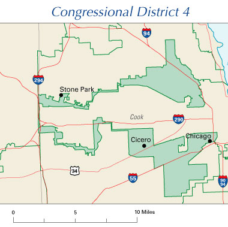

The number of seats per state is based on the most recent national census. A census is a constitutionally mandated survey conducted by the federal government every ten years that collects demographic information, such as the number of people who live in a state. The total US population is divided by 435 (the number of members of the House of Representatives) to determine the approximate number of people in a congressional district. One representative represents each district.
Usually the US Census Bureau engages in a variety of methods to conduct the census every ten years. They begin with mailing surveys to households to get voluntary responses to census questions. The Census Bureau then supplements this initial effort with a robust door-to-door operation over several months to contact those that are hard to reach or who move from place to place frequently to come up with accurate population counts. This is important as the population counts determine many things over the next ten years, including how seats are apportioned between the states in the House of Representatives.
State legislatures are usually in charge of redrawing the Congressional districts after each census. This process is called redistricting. Unfortunately, it’s possible to draw out these districts in such a way as to benefit one political party over another.

Data about voting trends can give a fairly accurate prediction of how certain places’ populations will vote. People in state legislatures often draw districts based on this data to help their own party win House seats. Districts are the defined geographical territory in which voters live. The voters of the district determine the political party representative they elect to represent them. The practice of drawing district borders to give one political party an unfair advantage over others is called gerrymandering.
Select each item to learn more.
A partisan gerrymander arranges electoral districts in such a way to benefit the political party in control of drawing the map. State legislatures generally have the authority to draw the boundaries of congressional districts in their state and often do so in such a way as to benefit the political party that is in the majority in the state legislature.
Racial gerrymandering is the practice of drawing districts along racial lines to dilute or amplify the representation of racial groups. This impacts the ability of minority populations to elect representatives that share their racial demographics.
Bipartisan gerrymandering happens in places where both parties have equal influence in the district drawing process. In this case, they often negotiate and trade for each party to have safer districts to protect the incumbents from each political party’s respective interests.
Legislators use two main strategies for gerrymandering: packing and cracking.
Select each item to learn more.
Packing is concentrating the opposing party’s voters in a small number of districts—that is, “packing” them into these districts. In packed districts, the opposing party will almost certainly win, but the gerrymandering party will win the other districts. Because each district gets one representative, the gerrymandering party wins more seats overall.
Cracking is splitting the opposing party’s votes among multiple districts, so the opposing party will be outvoted in each district. “Cracks” divide the opposing party’s voters into different districts.
Select each button to reveal the answer.
Why is gerrymandering a problem?
Gerrymandering takes power away from the people. In most gerrymandered districts, the shape of the district, rather than the voters, decides who is going to win. The politicians are picking their voters rather than the other way around.
Gerrymandering leads to increased political polarization. In a 50/50 Republican-to-Democrat voter district, candidates who want to win would need to be more moderate. In a 65 percent Republican (or Democrat) voter district, a more conservative or liberal candidate has an easier chance of winning. When these people with more extreme views go to Washington, they have a hard time compromising with those with whom they disagree.
Note that gerrymandering doesn’t happen only in the House of Representatives. In most states the state legislatures are themselves gerrymandered. This leads to a sad result—the people who would have the power to fix political gerrymandering (the state legislatures) are themselves benefiting from gerrymandering.
Many states are represented by legislatures that don’t directly represent the voting behavior of a state’s residents. In a very real sense, the lawmakers in state legislatures around the country have the ability to select their voters rather than the other way around.